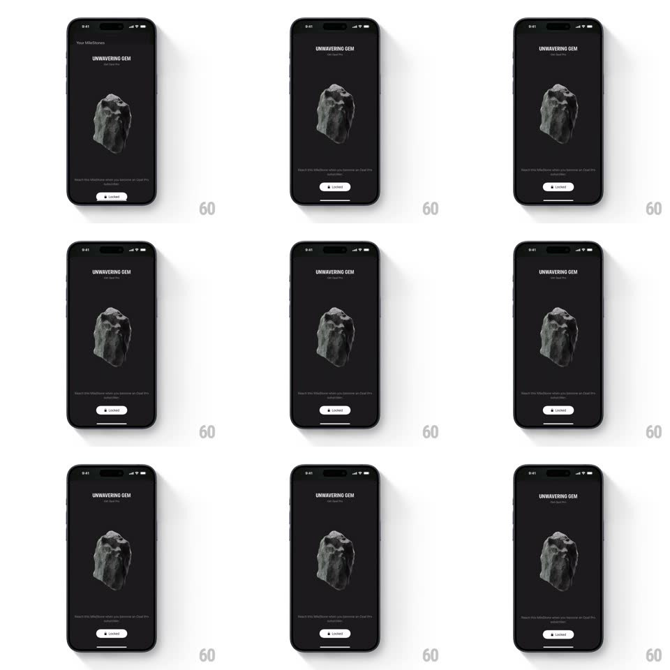

Media
Frame-by-frame

Rebuild this interaction 1:1: Opal's gem wiggle - on the "UNWAVERING GEM" detail screen, tapping the locked pill button makes both the button and the floating 3D rock wiggle horizontally in a firm "not yet" shake.

Rebuild this interaction 1:1: Opal's gem wiggle - on the "UNWAVERING GEM" detail screen, tapping the locked pill button makes both the button and the floating 3D rock wiggle horizontally in a firm "not yet" shake. ## Integration Integration: stack-agnostic spec - springs given as stiffness/damping, timed motions as duration + curve; map every value to your framework and animation library of choice. ## Scene Dark gem detail screen: "UNWAVERING GEM" title with "Earn Opal Pro" subline, a large floating grey 3D rock center-screen, requirement copy at the bottom, and a white "Locked" pill button with a lock icon. ## Motion spec Pattern: horizontal shake as negative feedback. - Tap the Locked button: the button depresses (scale 0.97, 80ms) and immediately wiggles (translateX keyframes 0 -> -8 -> +8 -> -5 -> +5 -> 0px, 400ms, ease-out between keys) with a haptic warning buzz. - The 3D rock mirrors the shake one beat later (~80ms delay): same translateX wiggle at 60% amplitude plus a slight counter-rotation (rotateZ -4deg -> +4deg -> 0), like the rock is stubbornly saying no. - The lock icon in the button jiggles with the shake (rotate +/-8deg, same keyframes). - Nothing else moves - the refusal is the whole response, no toast, no modal. ## Calibration - The wiggle decays - three direction changes maximum, each smaller. - Rock and button never move in the same frame exactly - the delay makes it feel connected, not synchronized. ## Reduced motion Single small button nudge (4px); rock stays still. ## Don't miss - The rock's floor shadow shifts with the wiggle - the shadow is part of the object. - The button returns to its exact resting position - no drift after the shake.